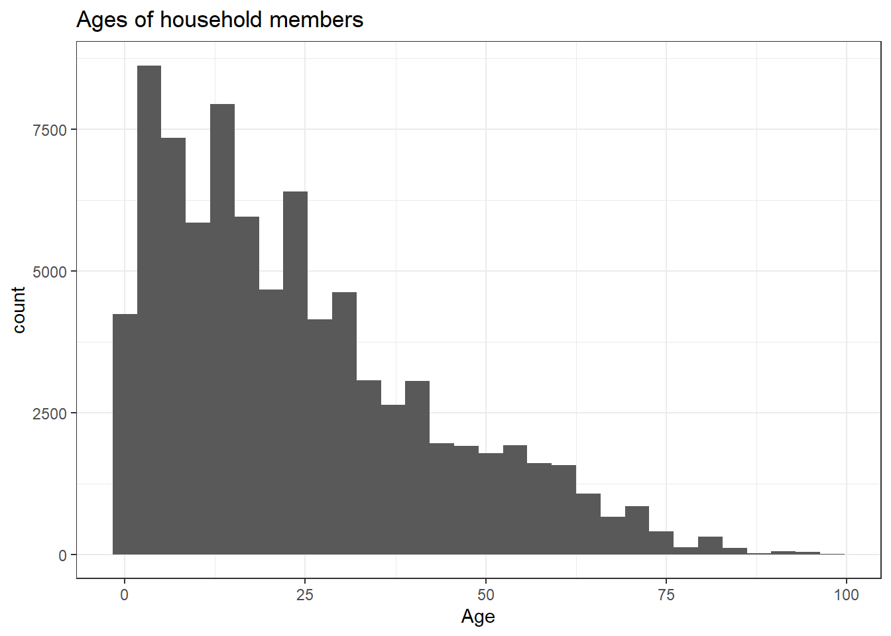

# Load required libraries, if not installed, install them
required_libraries = c("tidyverse","survey","foreign","janitor", "here")
is_installed = required_libraries %in% installed.packages()
for(i in which(!is_installed)){
install.packages(required_libraries[i])
}
library(tidyverse)
library(survey)
library(foreign)
library(janitor)
library(here)Pakistan 2017-18 DHS: Household contacts
The number and nature of contacts are important for exposure to infectious disease. Here we use household and age data to examine age structure and household age contacts
Load packages, installing as necessary
Read household survey data from a Stata file
# Load Stata file by unzipping select file
# data_local is relative the project directory and is gitignored (at least locally)
filename_hh_recode = here::here("data_local/PKHR71DT.zip")
#filename_hh_recode = "data_local/PKHR71FL.DTA"
unzip_dtafile = function(zipfile){
avail = unzip(zipfile, list = T)
unzip(zipfile, files = avail$Name[grep("DTA",avail$Name)])
}
# file load
tmp_file = unzip_dtafile(filename_hh_recode)
svy_data = read.dta(tmp_file)Prepare data for analysis; examine age data
# create design and convert to svydesign
# identify psu, weight files, and strata
psu_field = "hv021"
weight_field = "hv005"
strata_interim = c("hv024","hv025")
strata_formula = formula(paste("~", paste(strata_interim, collapse = "+"),
sep = ""))
# Note that GB and AJK provinces are treated specially and we will exclude
svy_data |>
group_by(hv024) |>
summarize(
official_weight = sum(hv005/1000000),
special_weight = sum(shv005/1000000))# A tibble: 8 × 3
hv024 official_weight special_weight
<fct> <dbl> <dbl>
1 punjab 6596. 0
2 sindh 2789. 0
3 kpk 1595. 0
4 balochistan 565. 0
5 gb 0 974.
6 ict 119. 0
7 ajk 0 1697.
8 fata 205. 0 svy_data = svy_data |>
filter(hv024 != "gb", hv024 != "ajk") |>
mutate(country = "Pakistan")
# create age bins
ages = seq(0,75,5)
# number of household contacts between age groups.
hh_ages_df = svy_data |>
select(hv001,hv002,contains("hv105")) |>
pivot_longer(cols = contains("hv105"), names_to = "key", values_to = "val") |>
filter(!is.na(val))
# examine properties of the data
hh_ages_df |>
ggplot(aes(x = val)) +
geom_histogram() +
xlab("Age") +
ggtitle("Ages of household members") +
theme_bw()
# Codes suggest truncation at 95 with 98 indicating unknown age
print(attr(svy_data, "label.table")$HV105_01) 95+ don't know
95 98 # How many ages are unknown?
print(mean(hh_ages_df$val == 98))[1] 2.41176e-05# Exclude unknown ages
hh_ages_df = hh_ages_df |>
filter(val != 98)Reshape and recode age data for HH structure (horizontal) and contacts (vertical)
# Add hh_size summarized from ages (self consistent)
hh_ages_df = hh_ages_df |>
group_by(hv001,hv002) |>
mutate(hh_size = n()) |>
ungroup()
# create age bins
age_label = function(.val, .age_breaks = ages){
paste0("age", str_pad(findInterval(.val, .age_breaks), 2, pad = "0"))
}
hh_ages_df = hh_ages_df |>
mutate(age_bin = age_label(val)) |>
select(-val)
# join by household but don't allow self contacts, which will be relabeled
contact_df = hh_ages_df |>
rename(key_from = key,
age_bin_from = age_bin) |>
inner_join(hh_ages_df |>
select(-hh_size) |>
rename(key_to = key,
age_bin_to = age_bin),
by=c("hv001","hv002")) |>
filter(!(key_from == key_to & hh_size > 1)) |>
mutate(age_bin_to = if_else(key_from == key_to, "single", age_bin_to))
# Create hh composition and hh contact data, to be added to survey data
hh_comp_df = hh_ages_df |>
select(-key) |>
group_by(hv001,hv002,hh_size,age_bin) |>
tally() |>
ungroup() |>
pivot_wider(names_from = age_bin, values_from = n, values_fill = 0,
names_sort = TRUE)
contact_df = contact_df |>
group_by(hv001, hv002, key_from, hh_size, age_bin_from, age_bin_to) |>
tally() |>
ungroup() |>
pivot_wider(names_from = age_bin_to, values_from = n, values_fill = 0,
names_sort = TRUE)
# join to survey but only use a subset of fields
svy_data_small_hh_comp = svy_data |>
select(country, hv001, hv002, hv005, hv021, hv024, hv025, shv005, hv009, hv012, hv013) |>
left_join(hh_comp_df)
svy_data_small_contact = svy_data |>
select(country, hv001, hv002, hv005, hv021, hv024, hv025, shv005) |>
left_join(contact_df)Compare difference in HH size measures
# Difference between measure of hh size in aggregate
expand_grid(hh_size_fields = c("hh_size", "hv009", "hv012", "hv013"),
hh_size_fields_compare = c("hh_size", "hv009", "hv012", "hv013")) |>
mutate(diff = map2_dbl(hh_size_fields, hh_size_fields_compare,
function(x, y){
size_x = svy_data_small_hh_comp[[x]]
size_y = svy_data_small_hh_comp[[y]]
sum(abs(size_x - size_y)) /
((sum(size_x) + sum(size_y))/2)
})) |>
pivot_wider(names_from = hh_size_fields_compare, values_from = diff)# A tibble: 4 × 5
hh_size_fields hh_size hv009 hv012 hv013
<chr> <dbl> <dbl> <dbl> <dbl>
1 hh_size 0 0.0000362 0.0174 0.0265
2 hv009 0.0000362 0 0.0173 0.0264
3 hv012 0.0174 0.0173 0 0.0409
4 hv013 0.0265 0.0264 0.0409 0 Create survey design objects, important to account for probability design
# create design objects
survey_design_hh_comp = svydesign(id = svy_data_small_hh_comp[,psu_field],
strata=strata_formula,
weights = ~I(hv005/1000000),
data = svy_data_small_hh_comp)
survey_design_contact = svydesign(id = svy_data_small_contact[,psu_field],
strata=strata_formula,
weights = ~I(hv005/1000000),
data = svy_data_small_contact)Results
Estimation
Here we produce multiple results, including various aggregations of:
- Average household size
- Age distribution
- Household size experienced by age groups (egocentric)
- HH contacts by age group (egocentric)
# age_fields
age_fields = sort(unique(contact_df$age_bin_from))
age_formula = as.formula(paste0("~",paste(age_fields,collapse="+")))
# Avg HH size
hh_size_formula = ~hh_size
form_strata = ~country+hv024+hv025
form_province = ~country+hv024
form_national = ~country
results_hh_size = tibble(
aggregation = c("strata","province","national"),
formulas = c(form_strata, form_province, form_national)) |>
mutate(results = map(formulas,
function(fm){
svyby(hh_size_formula,
fm,
FUN=svymean,
design = survey_design_hh_comp)
}))
# age distribution
results_age_distribution = tibble(
aggregation = c("strata","province","national"),
formulas = c(form_strata, form_province, form_national)) |>
mutate(results = map(formulas,
function(fm){
svyby(age_formula,
fm,
den=~hh_size,
FUN=svyratio,
design = survey_design_hh_comp)
}))
# HH size distribution from the point of view of ages (experienced)
results_hh_size_ego = tibble(
aggregation = c("strata","province","national"),
formulas = c(form_strata, form_province, form_national)) |>
mutate(formulas = map(formulas, ~update(.x, ~. + age_bin_from))) |>
mutate(results = map(formulas,
function(fm){
svyby(hh_size_formula,
fm,
FUN=svymean,
design = survey_design_contact)
}))
# contacts by age
results_contacts_ego = results_hh_size_ego |>
select(-results) |>
mutate(results = map(formulas,
function(fm){
svyby(age_formula,
fm,
FUN=svymean,
design = survey_design_contact)
}))
# Utility to convert survey output into ggplot-able
province_map = data.frame(hv024 = c("punjab", "sindh", "kpk", "balochistan",
"gb", "ict", "ajk", "fata"),
province = c("Punjab", "Sindh","KP",
"Balochistan","Gilgit Baltistan",
"ICT","AJK","FATA"))
convert_to_df = function(svyby_output, age_bin_convert=T){
fields = attr(svyby_output, "svyby")$variables
if(attr(svyby_output, "svyby")$statistic == "svyratio"){
fields = gsub("/(.*)","",fields)
}
field_idx = seq(ncol(svyby_output),length.out = length(fields)*2, by=-1) |> rev()
output = svyby_output
names(output)[field_idx] = paste(rep(fields, 2),
rep(c("est","se"), each = length(fields)),
sep = ".")
output = output |>
pivot_longer(cols = all_of(names(output)[field_idx])) |>
mutate(metric = if_else(grepl("est", name), "est", "se"),
name = substring(name, 1,
nchar(name) - if_else(metric=="se",3,4))) |>
pivot_wider(names_from = metric, values_from = value)
if(age_bin_convert){
age_map = tibble(
age_start = seq(0,by=5,length.out = 16),
code = paste0("age", str_pad(1:16, 2, pad="0")))
if(any(names(output) == "name")){
if(all(grepl("age",output$name))){
output = output |>
mutate(name = age_map$age_start[
match(name, age_map$code)])
}
}
# age_bin
output = output |>
mutate(across(starts_with("age_bin"),
~age_map$age_start[
match(.x, age_map$code)]))
}
if(any(names(output) == "hv024")){
output = output |>
left_join(province_map)
}
output
}
extract_and_convert = function(results_df){
results_df |>
select(-formulas) |>
mutate(results = map(results, convert_to_df)) |>
unnest(results)
}
# convert outputs
results_hh_sizs_df = results_hh_size |> extract_and_convert()
results_age_distribution_df = results_age_distribution |> extract_and_convert()
results_hh_size_ego_df = results_hh_size_ego |> extract_and_convert()
results_contacts_ego_df = results_contacts_ego |> extract_and_convert()Plots
# select plots
# Plot 1: HH size by province
ggplot(results_hh_sizs_df |> filter(aggregation == "province"),
aes(x=province, y=est, ymin=pmax(est-2*se, 0), ymax=est+2*se))+
geom_point()+geom_errorbar(aes())+
ylim(0,NA)+
ggtitle("Avg HH size by location") +
xlab(NULL) + ylab(NULL) +
theme_bw()# Plot 2a: Population age structure, country-wide
ggplot(results_age_distribution_df |> filter(aggregation == "national"),
aes(x=name,y=est))+
geom_bar(stat="identity", width = 5, just = 0, col = "lightgray") +
ylab("Age fractions")+
xlab("Age group")+
ggtitle("Age structure")+
theme_bw()# Plot 2b: Population age structure, by province
ggplot(results_age_distribution_df |> filter(aggregation == "province"),
aes(x=name,y=est))+
geom_bar(stat="identity", width = 5, just = 0, col = "lightgray") +
ylab("Age fractions")+
xlab("Age group")+
ggtitle("PAge structure by province")+
facet_wrap(~province) +
theme_bw()# Plot 3: "Experienced" HH size by age, i.e. egocentric
ggplot(results_hh_size_ego_df |> filter(aggregation == "national"),
aes(x=age_bin_from,y=est, ymin=pmax(est-2*se, 0), ymax=est+2*se))+
geom_point()+geom_errorbar(aes())+
ylim(0,NA)+
ggtitle("Avg HH size by location and age bin\n(experienced HH size)") +
xlab("Age group") + ylab("Avg HH size") +
theme_bw()# Plot 4a: HH contacts by age
ggplot(results_contacts_ego_df |> filter(aggregation == "national"),
aes(x=age_bin_from, y = name, fill=est)) +
geom_raster(hjust = 1, vjust = 1) + #scale_fill_gradient(low="grey90",high="red") +
scale_fill_viridis_c("# HH contacts", limits = c(0, NA)) +
ylab("Age group of HH contacts")+
xlab("Age group")+
coord_equal() +
ggtitle("Avg HH contacts by 5 year age")+
theme_bw()+
theme(panel.grid = element_blank())# Plot 4b: HH contacts by age, by province, with alternative binning,
# point estimates only
bin_map = tibble(age_bin_from = seq(0,75,5),
age_bin_new = cut(age_bin_from,
breaks = c(0, 5, 15, 45, Inf),
labels = c("0-5", "5-15", "15-45", "45+"),
right = FALSE))
new_contact_df = results_contacts_ego_df |>
filter(aggregation == "national") |>
inner_join(bin_map, by = c("name" = "age_bin_from")) |>
select(country, age_bin_from, age_bin_to = age_bin_new, est) |>
group_by(across(-est)) |>
summarize(contacts = sum(est)) |>
ungroup() |>
inner_join(results_age_distribution_df |>
filter(aggregation == "national") |>
inner_join(bin_map, by = c("name" = "age_bin_from")) |>
select(name, age_bin_new, est) |>
group_by(age_bin_new) |>
mutate(wt = est / sum(est)) |>
ungroup(),
by = c("age_bin_from" = "name")) |>
mutate(age_bin_from = age_bin_new) |>
group_by(country, age_bin_from, age_bin_to) |>
summarize(contacts = sum(contacts * wt)) |>
ungroup()
ggplot(new_contact_df,
aes(x=age_bin_from, y = age_bin_to, fill=contacts)) +
geom_raster() +
scale_fill_viridis_c("# HH contacts", limits = c(0, NA)) +
ylab("Age group of HH contacts")+
xlab("Age group")+
coord_equal() +
ggtitle("Avg HH contacts by binned age") +
theme_bw()